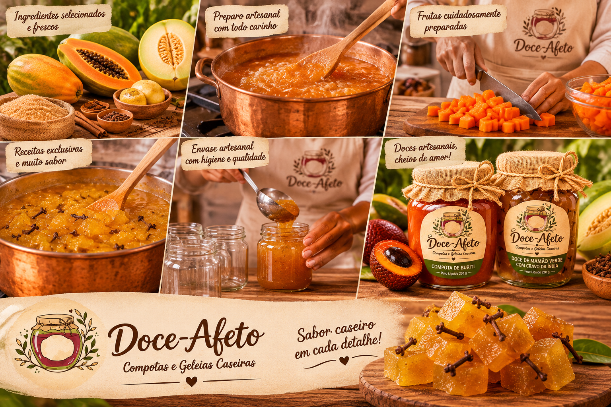

doce afeto
doce afetoFrutas da nossa terra em potes de afeto.
Compotas e geleias caseiras feitas em pequenos lotes com frutas regionais. Receitas simples, sabor autêntico e um pedacinho da Amazônia para acompanhar seu café ou presentear.
da nossa
terra
Sabores regionais no seu pote
Frutas regionais preparadas com cuidado e sem pressa. Escolha seus sabores favoritos. Pix tem 5% de desconto.

Receitas que guardam o sabor da região
A Doce Afeto transforma frutas regionais em compotas e geleias caseiras, preparadas em pequenos lotes. Valorizamos os sabores da Amazônia e o conhecimento de quem cultiva e colhe esses ingredientes.
Cada pote é feito com cuidado, respeitando o sabor natural da fruta e as receitas de família. Um jeito simples de levar a riqueza da nossa região para o café da manhã, a sobremesa ou um presente especial.
Ganhe 10% na primeira encomenda
Novos sabores da estação, receitas e um cupom de boas-vindas.
Perguntas com respostas doces
Precisa de ajuda com uma encomenda especial? Fale com a gente pelo WhatsApp ou e-mail. Respondemos em horário comercial.
Fale com a genteComo funciona a entrega?
Entregamos em Rio Branco. Informe seu CEP no carrinho para consultar a estimativa. A tabela demonstrativa considera R$ 12 para a região urbana e entrega em até 2 dias úteis. Os potes são embalados para transporte seguro.
Quais formas de pagamento são aceitas?
Esta versão acadêmica simula o checkout. Em uma operação real, Pix, cartões e carteiras digitais seriam processados por um provedor como Mercado Pago, em ambiente seguro, sem armazenar dados de cartão neste site.
Posso cancelar ou devolver meu pedido?
Em compras online, você pode exercer o direito de arrependimento no prazo legal de 7 dias corridos, conforme o Código de Defesa do Consumidor e o Decreto 7.962/2013. Entre em contato para solicitar orientação. Produtos perecíveis também seguem as regras sanitárias e de consumo aplicáveis.
Vocês emitem nota fiscal?
Na operação real, após a confirmação do pagamento, os dados do pedido seriam enviados ao sistema fiscal integrado para emissão da NF-e/NFS-e e envio ao cliente. Nesta demonstração não há emissão fiscal.